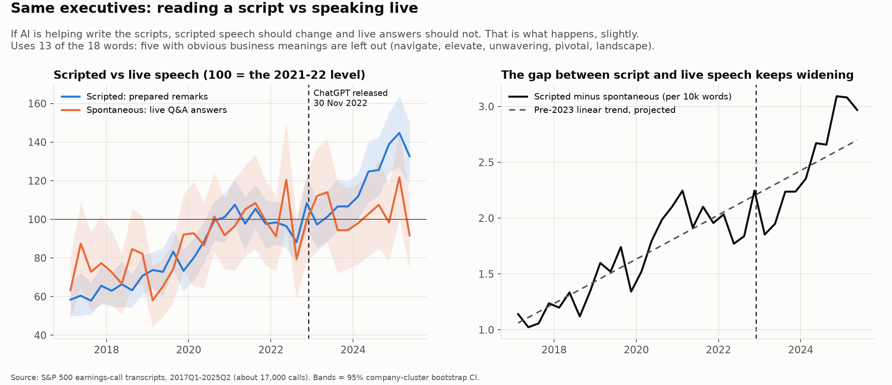
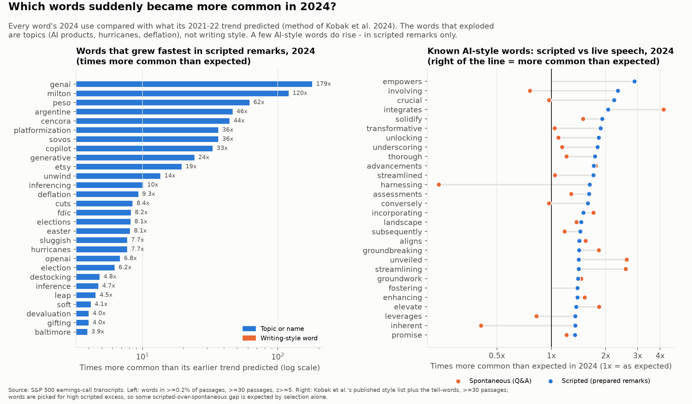

Are executives letting ChatGPT write for them?
I checked 163 million words from the bosses of America's 500 biggest companies to see if they started sounding like ChatGPT.
The answer: maybe a little, but there is no proof.
Nothing changed when ChatGPT came out. About a year later, a few "AI-sounding" words started creeping up, but only in things written ahead of time, like speeches and press-release quotes. When the same executives talk live, nothing changed.
That is a real hint that AI is helping with the writing. But the change is small, and it is no bigger than the normal ups and downs of business language. So: a hint, not a smoking gun.
- ChatGPT overuses certain words: delve, underscore, pivotal, showcase, seamless, transformative and a dozen more. I count how often executives use 18 of them.
- Every three months, companies hold an "earnings call". The bosses first read a script, then answer questions live. A script can be written by AI. A live answer cannot.
- So if AI is writing for them, the script should change and the live answers should not. That comparison is the heart of this project.
1. Did anything change when ChatGPT launched?
No. The chart shows how often the 18 words appear. The big jump is in 2020, when every company was suddenly "navigating" "elevated" uncertainty with "unwavering" commitment. That is COVID. After ChatGPT launched (dashed line), the lines stay flat for two years.

For the technically minded
Interrupted time-series (segmented) regression on quarterly rates with a break at 2023Q1, seasonal dummies and Newey-West errors. Scripted remarks: −0.3 words per 10,000 (95% interval −0.9 to +0.3) once a COVID level shift is included. A placebo break at November 2020 also gives nothing (−0.2, interval −2.3 to +1.9). A company fixed-effects panel agrees.
2. Script vs live: the key test
This is where the hint shows up. Since 2024, scripted speeches use more of these words. Live answers from the same people on the same day do not. The gap between the two keeps growing.
I also removed five words that have obvious business meanings (like "elevated" interest rates or "navigating" tariffs). With only the cleaner 13 words, the pattern gets stronger: scripts up 29%, live answers basically flat.

| Where the words appear | All 18 words | Cleaner 13 words |
|---|---|---|
| Scripted speeches | +10% | +29% |
| Live answers (same people) | −6% | +4% |
| Executive quotes in press releases | +17% | +41% |
| Rest of the press release | −9% | +19% |
Change from 2021-22 to 2024 onward. Green = the change is clearly not zero.
For the technically minded
Rates per 10,000 words, 2021Q1-2022Q4 vs 2024Q1 onward, with company-cluster bootstrap intervals: scripted +10% (+4 to +17), core 13 +29% (+18 to +41); spontaneous −6% (−14 to +2), core +4% (−10 to +20); quotes +17% (+6 to +30), core +41% (+22 to +66); narrative −9% (−20 to +5), core +19% (−2 to +47). Difference-in-differences, scripted relative to spontaneous on the same calls: ratio 1.17 (1.06 to 1.28), core 1.25 (1.08 to 1.45). The scripted-minus-spontaneous gap has no level jump at 2023Q1 but its slope steepens by +0.10 per 10,000 words per quarter (p<0.001).
3. Could this just be chance?
Honestly, yes. Words go in and out of fashion all the time. So I picked 1,000 random groups of ordinary words that were just as common as the AI words, and watched how much they moved over the same years (the grey band). The AI words moved more than most random groups, but not more than all of them. About 1 random group in 12 moved just as much.
Only two words clearly beat chance on their own: transformative and landscape.

For the technically minded
Controls are matched on 2017-22 frequency (±20%) and never on later behaviour; 1,000 draws of one control word per family. Scripted: tell-words +11% vs control range −16% to +18%, one-sided empirical p = 0.08. Press-release quotes: p = 0.11. Spontaneous and narrative: p = 0.71 and 0.69.
4. Which words actually took off?
Mostly topics, not style. I checked every word in the corpus, not only my 18, to see which ones became far more common in 2024 than their earlier trend predicted. The winners are things people were talking about: GenAI, Copilot, hurricane Milton, the Argentine peso.
A handful of AI-style words did rise in scripts (crucial, empowers, enhancing, unlocking, underscoring). In scientific papers the same method finds hundreds. Here it finds ten.

For the technically minded
Excess-vocabulary method of Kobak et al. (2024): each word's share of 300-word passages in 2024 against a linear projection from 2021-22. Because this corpus is far smaller than PubMed, words must also appear in at least 0.2% of passages and sit 5 standard errors above projection. Scripted 2024: 231 excess words, 10 of them style words; live Q&A: 4; press-release narrative: 2. The paper's lower-bound estimate of AI-affected text is +2.1 points for 2024 scripted remarks (−0.9 to +3.9), against about 13% for biomedical abstracts.
5. Who changed most?
CEOs, not finance chiefs. CEOs' scripts use 19% more of these words. CFOs' scripts did not change (−4%). That fits: CEOs give the big-picture pitch, CFOs read numbers.
By industry, healthcare (+38%) and utilities (+42%) rose the most. Company size made no difference.


For the technically minded
CEO +19% (+11 to +28), CFO −4% (−14 to +7). Healthcare +38% (+17 to +62) and Utilities +42% (+5 to +90) are the only sectors whose intervals exclude zero. Size thirds by public float: +9%, +10%, +10%. These are many comparisons with wide intervals, so treat them as descriptive.
6. Which companies changed most?
These are the companies whose scripted wording shifted most. This does not mean they use AI. A new CEO, a new speech-writer, or a word with a plain business meaning can cause the same shift.

Why you should not over-read this
- These words do not prove AI. People used them before ChatGPT, and most were already getting more popular.
- The change is tiny. About one extra AI-sounding word in every four speeches.
- COVID muddies the picture. It changed business language so much that "what would have happened anyway" is hard to pin down.
- Other explanations fit too. Business language follows fashion, and talking about AI brings in words like "transformative" and "harness".
- Only big US-listed companies. The speech data ends in May 2025; press releases run to November 2026.
Where the data comes from
About 17,000 earnings calls from S&P 500 companies since 2017, split into the scripted part and the live Q&A, plus about 23,500 earnings press releases from the US securities regulator (SEC). Everything is free and public. Legal boilerplate, tables and contact details are stripped out first.